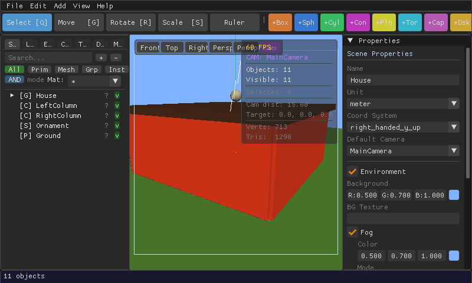

A Tour of the Interface
What every panel, button, and toolbar does — using real screenshots of the editor.

1. Menu Bar
Along the very top: File, Edit, Add, View, Help. This is where you'll find New, Open, Save, Export, Undo/Redo, and every command to add a new shape or CSG operation to the scene.
2. Toolbar
Below the menu bar:
- Select / Move / Rotate / Scale — the four transform tools. Click one, or use its shortcut (Q, G, R, S).
- Ruler — the measurement tool; click two points in the viewport to see the distance between them.
- Colored quick-add buttons (
+Box,+Sph,+Cyl,+Con,+Pln,+Tor,+Cap,+Dsk…) — one click drops that primitive shape into the scene.
3. Left Panel — Hierarchy & Scene Data
This panel is tabbed. The tab labels shrink to a single letter when the panel is narrow — widen the panel or hover to see the full name:
| Tab | What it shows |
|---|---|
| Scene | The object hierarchy — every shape, group, and CSG node in your scene, nestable like folders. Search and filter by type (Prim / Mesh / Grp / Inst) or material at the top. |
| Lights | Every light in the scene and its properties. |
| Env | Environment settings — background color, fog. |
| Cam | Cameras defined in the scene. |
| Tex | Textures loaded into the scene. |
| Defs | Reusable object definitions (for placing many instances of the same thing). |
| Mat | Materials — the color/shine/glow presets your objects use. |
Click an object's name in the Scene tab to select it — the same as clicking it in the 3D viewport.
4. The 3D Viewport
The large center area is your 3D view.
- Front / Top / Right / Persp / Persp-FPS buttons snap the camera to a preset angle.
- A small overlay in the corner shows live stats: camera name, object/vertex/triangle counts, and what's currently selected.
- Selected objects get a colored outline, and a transform gizmo (arrows/rings/handles) appears on them when the Move, Rotate, or Scale tool is active.
See Your First Scene for how to orbit, pan, and zoom the camera.
5. Right Panel — Properties
Shows details for whatever is selected — an object's position/rotation/scale, its material, or (when nothing is selected) the overall scene's name, units, coordinate system, background, and fog settings.

6. Status Bar
The thin strip along the bottom shows quick context, such as the total object count or a warning (for example, that a newer autosave was found for the file you just opened).
Every panel arrangement described here is also listed with its keyboard shortcut in the Keyboard Shortcuts cheat sheet.